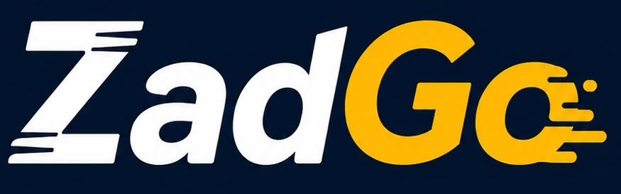

منصة توصيل سعودية تجمع مطاعمك المفضلة في تطبيق واحد: توصيل سريع، وتتبع لحظي لطلبك من المطبخ حتى بابك.
اطلب الآن من متصفحك والتطبيق قادم قريباًمطاعمك المفضلة بصور حقيقية وأسعار كاملة أمامك.
من قبول المطعم حتى انطلاق مندوبك — خطوة بخطوة على الخريطة.
وادفع كما يناسبك: بطاقة، كاش، أو محفظتك.
مدى وبطاقة، كاش عند الاستلام، أو محفظتك في التطبيق.
موقع مندوبك أولاً بأول حتى باب بيتك.
خصومات حقيقية بلا شروط مخفية.
من عملاء طلبوا فعلاً — لا مجاملات.
لكل صنف قبل أن تطلب.
كل ريال واضح: الوجبة والتوصيل بلا دمج.
عملاء جدد يصلونك من اليوم الأول — بلا أي تكلفة تأسيس. منيوك الرقمي بصورك وأسعارك، وطلباتك تصل مطبخك لحظة وقوعها, وتقارير تُطلعك على كل ريال — ومستحقاتك بحساب مكشوف أمامك.
تواصل معنا لضمّ مطعمك